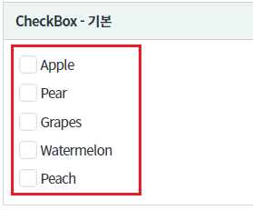
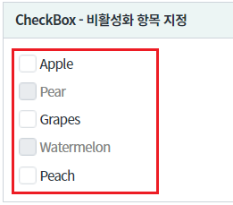
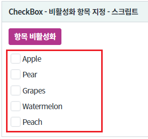
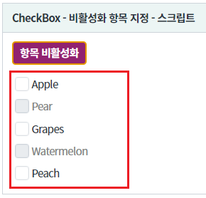
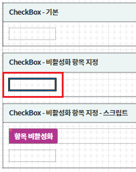
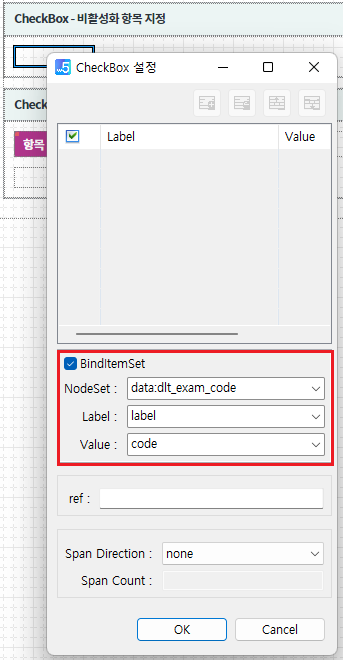
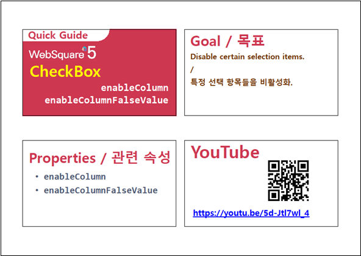

[CheckBox] 특정 항목 비활성화 하기
1개요
컴포넌트의 목록 중 조건에 따라 항목을 비활성화하는 예제입니다. 비활성화된 항목은 사용자의 선택이 불가합니다.
2구현된 기능
기본(모든 항목 활성화)
출력된 목록 중 특정 항목을 비활성화 하기 - 속성으로 설정
출력된 목록 중 특정 항목을 비활성화 하기 - 스크립트로 설정
3예제 테스트 방법
설정별로 구성된 컴포넌트의 목록은 하나의 DataList와 연결되어있습니다. 설정에 따라 출력된 목록을 비교합니다.
3.1기본 상태
그림 1.브라우저(Chrome) 실행 예시 - 모든 항목이 활성화 된 상태

3.2속성으로 비활성화 항목 설정하기
그림 2.브라우저(Chrome) 실행 예시 - 특정 항목이 비활성화 된 상태

3.3스크립트로 비활성화 항목 설정하기
- STEP1. 기본 상태를 확인합니다.
모든 항목이 활성화되어있습니다.
[브라우저(Chrome) 실행 예시 - 기본 상태]

- STEP2. 버튼 항목 비활성화를 클릭합니다.
스크립트로 비활성화 항목이 설정됩니다.
- STEP3. 실행된 결과를 확인합니다.
목록의 비활성화 항목을 확인합니다.
[브라우저(Chrome) 실행 예시 - 실행 결과]

4구현 예시
이 기능은 컴포넌의 목록이 DataList와 연결되어야 사용할 수 있는 기능입니다.
4.1DataList 정의하기
컴포넌트의 목록과 연결할 DataList를 정의합니다.
DataList를 생성하고 ID를 dlt_exam_code로 할당합니다.
필수로 정의될 컬럼은 3가지로 아래와 같습니다. 컬럼의 ID는 환경에 맞게 정의할 수 있습니다.label : 화면에 출력할 레이블
code : 화면에 출력할 레이블의 값
useYN : 비활성화할 조건의 값
(enableColumn 속성에 지정할 컬럼입니다. 이 컬럼의 값이 enableColumnFalseValue 속성에 정의한 값과 동일한 경우 해당 항목은 비활성화됩니다.)
그림 3.웹스퀘어5 SP5 스튜디오의 DataCollection 탭 예시

생성한 DataList에서 사용할 데이터를 할당합니다. 예제에서는 화면이 로딩된 시점(scwin.onpageload)에 데이터를 할당하고 있습니다.
비활성화할 항목은 useYN 컬럼에 N를 정의합니다.scwin.onpageload = function() { //DataList dlt_exam_code에 데이터 할당 dlt_exam_code.setJSON([ {"label":"Apple","code":"01","useYN":"Y"}, {"label":"Pear","code":"02","useYN":"N"}, {"label":"Grapes","code":"03","useYN":"Y"}, {"label":"Watermelon","code":"04","useYN":"N"}, {"label":"Peach","code":"05","useYN":"Y"} ]); };
4.2컴포넌트의 목록과 DataList 연결하기
스튜디오의 디자인 탭에서 컴포넌트를 더블 클릭하여 목록과 DataList를 연결합니다. (아래의 이미지를 참고하여 설정합니다)
그림 4.웹스퀘어5 SP5 스튜디오의 Design 탭 예시

그림 5.웹스퀘어5 SP5 스튜디오의 Design 탭 예시 - 목록과 DataList 연결하기

4.3컴포넌트에 항목 비활성화 설정하기
속성으로 설정하기
컴포넌트의 속성을 정의합니다. 정의할 속성은 2가지로 아래와 같습니다.
enableColumn="useYN" //DataList에 정의한 컬럼의 ID
enableColumnFalseValue="N" //비활성화할 항목의 조건
값이 여러개인 경우 , 로 구분하여 정의합니다. 이 컬럼에 아무런 값을 정의하지 않은 경우 기본값은 0, false, FALSE, F 입니다.
그림 6.웹스퀘어5 SP5 스튜디오의 Property View(속성창) 예시

<!-- CheckBox의 소스 본문 예시 --> <xf:select enableColumn="useYN" enableColumnFalseValue="N"> <!-- 중략 --> </xf:select>
스크립트로 설정하기
원하는 시점에 setEnableColumn method를 이용하여 스크립트에서 설정할 수 있습니다.
//항목 비활성화 컬럼 및 비활성화값 설정 - 목록과 연결된 DataList의 "useYN" 컬럼의 값이 "N"인 경우 비활성화합니다. cbx_exam3.setEnableColumn("useYN", "N"); //조건의 값이 여러개 인 경우 ,로 구분합니다. //목록과 연결된 DataList의 "useYN" 컬럼의 값이 "N" 또는 "Y" 인 경우 비활성화합니다. //cbx_exam3.setEnableColumn("useYN", "N,Y");
5주요 API
enableColumn
enableColumnFalseValue
setEnableColumn( columnId, enableColumnFalseValue )
6참고 문서
[웹스퀘어5 SP5 개발 가이드] CheckBox
링크 : https://docs1.inswave.com/sp5_user_guide/8df43d1f59fab704#27cc3703f47a5f30
[웹스퀘어5 SP5 개발 가이드] CheckBox 일부 선택 항목 비활성화하기
링크 : https://docs1.inswave.com/sp5_user_guide/8df43d1f59fab704#01638fbb1082365f
7참고 동영상
CheckBox 일부 선택 항목 비활성화하기
링크 : https://youtu.be/5d-Jtl7wl_4
